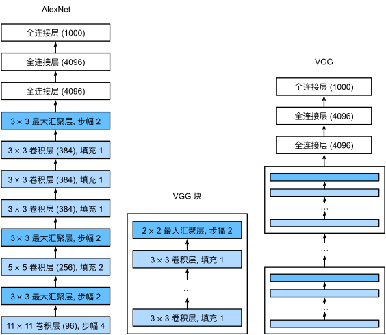
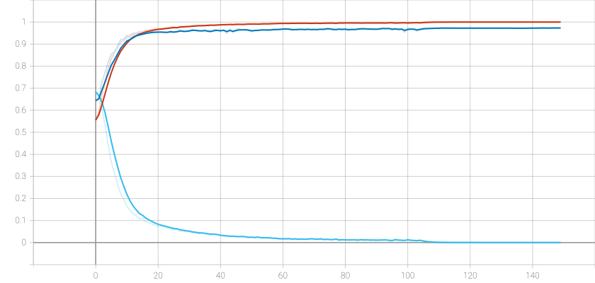

!rm -rf /kaggle/working/*
!rm -rf /kaggle/temp/*卷积神经网络VGG
VGG神经网络
与AlexNet、LeNet一样，VGG网络可以分为两部分：第一部分主要由卷积层和汇聚层组成，第二部分由全连接层组成。

VGG-16网络有5个卷积块，其中前两个块各有两个卷积层，后三个块各包含三个卷积层。 第一个模块有64个输出通道，每个后续模块将输出通道数量翻倍，直到该数字达到512。由于该网络使用13个卷积层和3个全连接层，因此它通常被称为VGG-16。接下来将使用猫狗数据集来训练VGG-16。
构建VGG-16网络之前，先将工作迁移到kaggle上面，kaggle每周有30个小时的时长可以用来训练模型。
清空working文件夹
加载必要的包
import time
import os
import torch.nn as nn
import torch
from torch.utils.data import DataLoader
from torchvision import transforms, datasets
import torch.optim as optim
from tqdm.notebook import tqdm
from torch.utils.tensorboard import SummaryWriter
from torch.optim.lr_scheduler import SequentialLR, LinearLR, MultiStepLR定义VGG模型
class VGG(nn.Module):
def __init__(self, features, num_classes=1000, init_weights=True):
super(VGG, self).__init__()
self.features = features
self.flatten = nn.Flatten()
# Classifier layers as per VGG architecture
self.classifier = nn.Sequential(
nn.Linear(512 * 7 * 7, 4096),
nn.ReLU(True),
nn.Dropout(p=0.5),
nn.Linear(4096, 4096),
nn.ReLU(True),
nn.Dropout(p=0.5),
nn.Linear(4096, num_classes),
)
if init_weights:
self._initialize_weights()
def forward(self, x):
x = self.features(x)
x = self.flatten(x)
x = self.classifier(x)
return x
def _initialize_weights(self):
for m in self.modules():
if isinstance(m, nn.Conv2d):
nn.init.kaiming_normal_(m.weight, mode='fan_out', nonlinearity='relu')
if m.bias is not None:
nn.init.constant_(m.bias, 0)
elif isinstance(m, nn.Linear):
nn.init.kaiming_uniform_(m.weight, nonlinearity='relu')
nn.init.constant_(m.bias, 0)卷积块独立出来
# vgg网络模型配置列表，数字表示卷积核个数，'M'表示最大池化层
cfgs = {
'vgg11': [64, 'M', 128, 'M', 256, 256, 'M', 512, 512, 'M', 512, 512, 'M'], # 模型A
'vgg13': [64, 64, 'M', 128, 128, 'M', 256, 256, 'M', 512, 512, 'M', 512, 512, 'M'], # 模型B
'vgg16': [64, 64, 'M', 128, 128, 'M', 256, 256, 256, 'M', 512, 512, 512, 'M', 512, 512, 512, 'M'], # 模型D
'vgg19': [64, 64, 'M', 128, 128, 'M', 256, 256, 256, 256, 'M', 512, 512, 512, 512, 'M', 512, 512, 512, 512, 'M'], # 模型E
}
def make_conv_block(cfg: list):
layers = []
in_channels = 3 # 输入通道数，RGB图像为3
for v in cfg:
if v == 'M':
layers += [nn.MaxPool2d(kernel_size=2, stride=2)]
else:
layers += [nn.Conv2d(in_channels, v, kernel_size=3, padding=1),
nn.ReLU(inplace=True)]
in_channels = v
return nn.Sequential(*layers)
def vgg(model_name='vgg16', **kwargs):
try:
cfg = cfgs[model_name]
except:
raise ValueError(f"Invalid model name '{model_name}'. Available models: {list(cfgs.keys())}")
model = VGG(make_conv_block(cfg), **kwargs)
return model定义参数
# 配置训练参数
BATCH_SIZE = 128
LEARNING_RATE = 0.01
MOMENTUM = 0.9
WEIGHT_DECAY = 1e-4
EPOCHS = 150
NUM_CLASSES = 2 # ImageNet 有 1000 个类别
IMAGE_SIZE = 32 # VGG 的标准输入尺寸
# 数据集存放目录
DATASET_DIR = r'/kaggle/input/microsoft-catsvsdogs-dataset/'
TEMP_DIR = r'/kaggle/temp/'
if not os.path.exists(DATASET_DIR):
os.makedirs(DATASET_DIR)
# tensorboard日志目录
LOG_DIR = r'/kaggle/working/logs/'
if not os.path.exists(LOG_DIR):
os.makedirs(LOG_DIR)
# 模型参数存放目录
MODEL_DIR = r'/kaggle/working/'
if not os.path.exists(MODEL_DIR):
os.makedirs(MODEL_DIR)开始加载数据集
猫狗数据集已经放置在DATASET_DIR目录下。目录结构如下：
.
└── PetImages
├── Cat
└── Dog将其分割成训练集和验证集
import os
import shutil
import random
from PIL import Image
# 设置路径
original_data_dir = os.path.join(DATASET_DIR, 'PetImages') # 你的原始 Cat/ 和 Dog/ 目录所在路径
base_dir = TEMP_DIR # 训练/验证集存放路径
train_dir = os.path.join(base_dir, "train")
val_dir = os.path.join(base_dir, "val")
# 创建 train 和 val 目录
for split in ["train", "val"]:
os.makedirs(os.path.join(train_dir, "cats"), exist_ok=True)
os.makedirs(os.path.join(train_dir, "dogs"), exist_ok=True)
os.makedirs(os.path.join(val_dir, "cats"), exist_ok=True)
os.makedirs(os.path.join(val_dir, "dogs"), exist_ok=True)
# 获取所有猫和狗的图片
all_cats = [f for f in os.listdir(os.path.join(original_data_dir, "Cat")) if f.endswith(".jpg")]
all_dogs = [f for f in os.listdir(os.path.join(original_data_dir, "Dog")) if f.endswith(".jpg")]
# 随机打乱数据集
random.seed(42)
random.shuffle(all_cats)
random.shuffle(all_dogs)
# 计算 80% 训练，20% 验证
train_size = int(0.8 * len(all_cats))
train_cats, val_cats = all_cats[:train_size], all_cats[train_size:]
train_dogs, val_dogs = all_dogs[:train_size], all_dogs[train_size:]
def copy_validate_img(original_file, target_file):
try:
with Image.open(original_file) as img:
img.verify()
shutil.copy(original_file, target_file)
except:
print("跳过损坏文件：", original_file)
# 复制猫图片到新的目录
for fname in train_cats:
copy_validate_img(os.path.join(original_data_dir, "Cat", fname), os.path.join(train_dir, "cats", fname))
for fname in val_cats:
copy_validate_img(os.path.join(original_data_dir, "Cat", fname), os.path.join(val_dir, "cats", fname))
# 复制狗图片到新的目录
for fname in train_dogs:
copy_validate_img(os.path.join(original_data_dir, "Dog", fname), os.path.join(train_dir, "dogs", fname))
for fname in val_dogs:
copy_validate_img(os.path.join(original_data_dir, "Dog", fname), os.path.join(val_dir, "dogs", fname))
print("数据集划分完成！")开始加载到DataLoader
# 数据预处理
train_transform = transforms.Compose([
transforms.Resize((256, 256)),
transforms.RandomCrop(224),
transforms.RandomHorizontalFlip(),
transforms.ToTensor(),
transforms.Normalize([0.485, 0.456, 0.406], [0.229, 0.224, 0.225])
])
val_transform = transforms.Compose([
transforms.Resize((224, 224)),
transforms.ToTensor(),
transforms.Normalize([0.485, 0.456, 0.406], [0.229, 0.224, 0.225])
])
# 加载数据
train_dataset = datasets.ImageFolder(root=os.path.join(TEMP_DIR, 'train'), transform=train_transform)
val_dataset = datasets.ImageFolder(root=os.path.join(TEMP_DIR, 'val'), transform=val_transform)
train_loader = DataLoader(train_dataset, batch_size=32, shuffle=True, num_workers=4)
val_loader = DataLoader(val_dataset, batch_size=32, shuffle=False, num_workers=4)验证
train, val = next(iter(val_loader))
train.shape, val.shape开始训练
在训练过程中使用了调度器，来动态调整SGD的学习率。
# 设置训练设备
device = torch.device("cuda" if torch.cuda.is_available() else "cpu")
# 初始化模型
model_name = "vgg16"
net = vgg(model_name=model_name, num_classes=NUM_CLASSES, init_weights=True)
net = net.to(device)
# 定义损失函数和优化器
loss_fn = nn.CrossEntropyLoss().to(device)
optimizer = torch.optim.SGD(net.parameters(),
lr=LEARNING_RATE,
momentum=MOMENTUM,
weight_decay=WEIGHT_DECAY)
# 前5个epoch线性热身
warmup_scheduler = LinearLR(
optimizer,
start_factor=0.01,
end_factor=1.0,
total_iters=5
)
# 主衰减调度器
main_scheduler = MultiStepLR(optimizer, milestones=[100,150], gamma=0.1)
# 组合调度器
scheduler = SequentialLR(
optimizer,
schedulers=[warmup_scheduler, main_scheduler],
milestones=[5] # 5个epoch后切换到主调度器
)
# epoch总数
num_epochs = EPOCHS
# 定义tensorboard对象
writer = SummaryWriter(log_dir=LOG_DIR)
# 总数据集大小
train_data_size = len(train_dataset)
test_data_size = len(val_dataset)
# 每个epoch内部循环次数
train_iter_size = len(train_loader)
test_iter_size = len(val_loader)
print(f'Training dataset size: {train_data_size}, Validation dataset size: {test_data_size}')
# 训练和验证循环
best_acc = 0
for epoch in range(num_epochs):
start_time = time.time()
# 训练阶段
net.train()
total_train_accuracy = 0
total_train_loss = 0
for train_batch, label in train_loader:
train_batch, label = train_batch.to(device), label.to(device)
output = net(train_batch)
loss = loss_fn(output, label)
# 优化器模型
optimizer.zero_grad()
loss.backward()
optimizer.step()
# 累计损失率
total_train_loss += loss
# 累计准确度
accuracy = (output.argmax(1) == label).sum()
total_train_accuracy += accuracy.item()
# 测试阶段
net.eval()
total_test_accuracy = 0
with torch.no_grad():
for test_batch, label in val_loader:
test_batch, label = test_batch.to(device), label.to(device)
output = net(test_batch)
accuracy = (output.argmax(1) == label).sum()
total_test_accuracy += accuracy.item()
train_loss = total_train_loss/train_iter_size
train_acc = total_train_accuracy/train_data_size
test_acc = total_test_accuracy/test_data_size
# 绘制图表
writer.add_scalars("AlexNet", {
'train_loss_epoch': train_loss,
'train_acc_epoch': train_acc,
'test_acc_epoch': test_acc
}, epoch)
# 每个epoch结束后更新学习率
scheduler.step()
# 一个周期结束
end_time = time.time()
print(f"epoch：{epoch}，训练集损失：{train_loss}，训练集准确度：{train_acc}，测试集准确度：{test_acc}")
print(f"训练耗时：{(end_time - start_time):2f}")
if best_acc < test_acc:
best_acc = test_acc
pth_save_path = os.path.join(MODEL_DIR, f"VGGNet_best.pth")
torch.save(net.state_dict(), pth_save_path)
writer.close()训练结果
